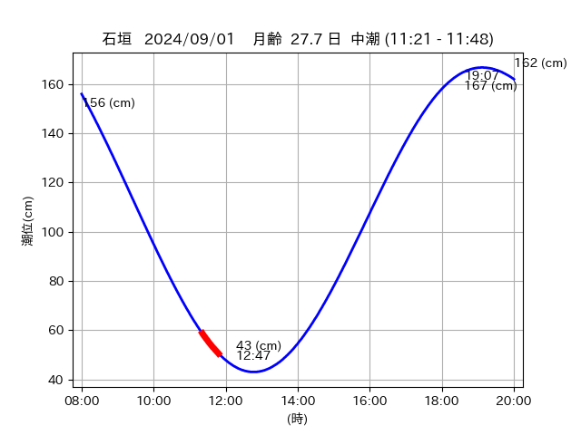
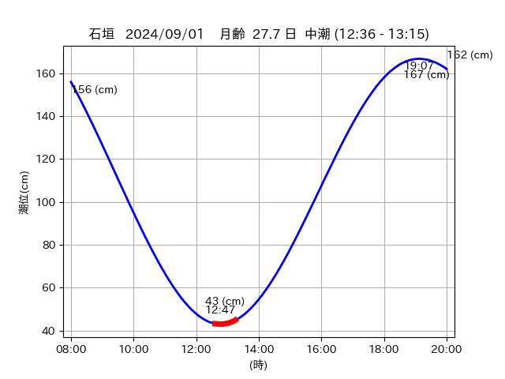

<!DOCTYPE html>
<html>
<head>
    
    <meta http-equiv="content-type" content="text/html; charset=UTF-8" />
    
        <script>
            L_NO_TOUCH = false;
            L_DISABLE_3D = false;
        </script>
    
    <style>html, body {width: 100%;height: 100%;margin: 0;padding: 0;}</style>
    <style>#map {position:absolute;top:0;bottom:0;right:0;left:0;}</style>
    <script src="https://cdn.jsdelivr.net/npm/leaflet@1.9.3/dist/leaflet.js"></script>
    <script src="https://code.jquery.com/jquery-3.7.1.min.js"></script>
    <script src="https://cdn.jsdelivr.net/npm/bootstrap@5.2.2/dist/js/bootstrap.bundle.min.js"></script>
    <script src="https://cdnjs.cloudflare.com/ajax/libs/Leaflet.awesome-markers/2.0.2/leaflet.awesome-markers.js"></script>
    <link rel="stylesheet" href="https://cdn.jsdelivr.net/npm/leaflet@1.9.3/dist/leaflet.css"/>
    <link rel="stylesheet" href="https://cdn.jsdelivr.net/npm/bootstrap@5.2.2/dist/css/bootstrap.min.css"/>
    <link rel="stylesheet" href="https://netdna.bootstrapcdn.com/bootstrap/3.0.0/css/bootstrap-glyphicons.css"/>
    <link rel="stylesheet" href="https://cdn.jsdelivr.net/npm/@fortawesome/fontawesome-free@6.2.0/css/all.min.css"/>
    <link rel="stylesheet" href="https://cdnjs.cloudflare.com/ajax/libs/Leaflet.awesome-markers/2.0.2/leaflet.awesome-markers.css"/>
    <link rel="stylesheet" href="https://cdn.jsdelivr.net/gh/python-visualization/folium/folium/templates/leaflet.awesome.rotate.min.css"/>
    
            <meta name="viewport" content="width=device-width,
                initial-scale=1.0, maximum-scale=1.0, user-scalable=no" />
            <style>
                #map_8f7b8109d7d4b9c1eba546465fa4d743 {
                    position: relative;
                    width: 2048.0px;
                    height: 1600.0px;
                    left: 0.0%;
                    top: 0.0%;
                }
                .leaflet-container { font-size: 1rem; }
            </style>
        
</head>
<body>
    
    
            <div class="folium-map" id="map_8f7b8109d7d4b9c1eba546465fa4d743" ></div>
        
</body>
<script>
    
    
            var map_8f7b8109d7d4b9c1eba546465fa4d743 = L.map(
                "map_8f7b8109d7d4b9c1eba546465fa4d743",
                {
                    center: [24.195, 123.57],
                    crs: L.CRS.EPSG3857,
                    ...{
  "zoom": 12,
  "zoomControl": true,
  "preferCanvas": false,
}

                }
            );

            

        
    
            var tile_layer_34ed505e189495a495be9ea8a37f9ed8 = L.tileLayer(
                "https://cyberjapandata.gsi.go.jp/xyz/seamlessphoto/{z}/{x}/{y}.jpg",
                {
  "minZoom": 0,
  "maxZoom": 18,
  "maxNativeZoom": 18,
  "noWrap": false,
  "attribution": "\u5730\u7406\u9662\u5730\u56f3",
  "subdomains": "abc",
  "detectRetina": false,
  "tms": false,
  "opacity": 1,
}

            );
        
    
            tile_layer_34ed505e189495a495be9ea8a37f9ed8.addTo(map_8f7b8109d7d4b9c1eba546465fa4d743);
        
    
            var marker_dd331e1c06849c925dd0c2b669e7ede2 = L.marker(
                [24.1909, 123.5548],
                {
}
            ).addTo(map_8f7b8109d7d4b9c1eba546465fa4d743);
        
    
            var icon_ed0fc89cd35abb42574ec2a517f5836a = L.AwesomeMarkers.icon(
                {
  "markerColor": "orange",
  "iconColor": "white",
  "icon": "info-sign",
  "prefix": "glyphicon",
  "extraClasses": "fa-rotate-0",
}
            );
        
    
        var popup_58c607d6be72564fe0d7014e0701b7c2 = L.popup({
  "maxWidth": "100%",
});

        
            
                var html_9efff58b67113441fd76f5bf528f3e8c = $(`<div id="html_9efff58b67113441fd76f5bf528f3e8c" style="width: 100.0%; height: 100.0%;"><table><tr><td></td></tr><tr><td><center>20240901 No.1 </center></table></td></tr></table</div>`)[0];
                popup_58c607d6be72564fe0d7014e0701b7c2.setContent(html_9efff58b67113441fd76f5bf528f3e8c);
            
        

        marker_dd331e1c06849c925dd0c2b669e7ede2.bindPopup(popup_58c607d6be72564fe0d7014e0701b7c2)
        ;

        
    
    
                marker_dd331e1c06849c925dd0c2b669e7ede2.setIcon(icon_ed0fc89cd35abb42574ec2a517f5836a);
            
    
            var poly_line_6e6d74ea1c980387b278ac1be62cff74 = L.polyline(
                [[24.1909, 123.5548], [24.1902, 123.5486]],
                {"bubblingMouseEvents": true, "color": "#00FFFF", "dashArray": null, "dashOffset": null, "fill": false, "fillColor": "#00FFFF", "fillOpacity": 0.2, "fillRule": "evenodd", "lineCap": "round", "lineJoin": "round", "noClip": false, "opacity": 1.0, "smoothFactor": 1.0, "stroke": true, "weight": 3}
            ).addTo(map_8f7b8109d7d4b9c1eba546465fa4d743);
        
    
            var marker_9d6c168487ba7cc8751894d5fd699fab = L.marker(
                [24.1971, 123.5711],
                {
}
            ).addTo(map_8f7b8109d7d4b9c1eba546465fa4d743);
        
    
            var icon_bddb91c4ad93f7e3bbabc867aaa98de1 = L.AwesomeMarkers.icon(
                {
  "markerColor": "orange",
  "iconColor": "white",
  "icon": "info-sign",
  "prefix": "glyphicon",
  "extraClasses": "fa-rotate-0",
}
            );
        
    
        var popup_2a2c032e791820a7c200ae80f83f4808 = L.popup({
  "maxWidth": "100%",
});

        
            
                var html_882135dbd30ac5cd9d73911b11dd35bc = $(`<div id="html_882135dbd30ac5cd9d73911b11dd35bc" style="width: 100.0%; height: 100.0%;"><table><tr><td></td></tr><tr><td><center>20240901 No.2 </center></table></td></tr></table</div>`)[0];
                popup_2a2c032e791820a7c200ae80f83f4808.setContent(html_882135dbd30ac5cd9d73911b11dd35bc);
            
        

        marker_9d6c168487ba7cc8751894d5fd699fab.bindPopup(popup_2a2c032e791820a7c200ae80f83f4808)
        ;

        
    
    
                marker_9d6c168487ba7cc8751894d5fd699fab.setIcon(icon_bddb91c4ad93f7e3bbabc867aaa98de1);
            
    
            var poly_line_f19e4a6e3f9797171010ff96e9057a31 = L.polyline(
                [[24.1971, 123.5711], [24.193, 123.5735]],
                {"bubblingMouseEvents": true, "color": "#00FFFF", "dashArray": null, "dashOffset": null, "fill": false, "fillColor": "#00FFFF", "fillOpacity": 0.2, "fillRule": "evenodd", "lineCap": "round", "lineJoin": "round", "noClip": false, "opacity": 1.0, "smoothFactor": 1.0, "stroke": true, "weight": 3}
            ).addTo(map_8f7b8109d7d4b9c1eba546465fa4d743);
        
    
            var marker_b786237b5fb4864b07e9439eb6631111 = L.marker(
                [24.1964, 123.5726],
                {
}
            ).addTo(map_8f7b8109d7d4b9c1eba546465fa4d743);
        
    
            var icon_06e4432acc558d41d22af2b53b025e83 = L.AwesomeMarkers.icon(
                {
  "markerColor": "orange",
  "iconColor": "white",
  "icon": "info-sign",
  "prefix": "glyphicon",
  "extraClasses": "fa-rotate-0",
}
            );
        
    
        var popup_f512fa3ef51c127e492faa5bef3f92af = L.popup({
  "maxWidth": "100%",
});

        
            
                var html_5c875f8ef69de40c2a4f7184cb8b0a64 = $(`<div id="html_5c875f8ef69de40c2a4f7184cb8b0a64" style="width: 100.0%; height: 100.0%;"><table><tr><td></td></tr><tr><td><center>20240901 No.3 </center></table></td></tr></table</div>`)[0];
                popup_f512fa3ef51c127e492faa5bef3f92af.setContent(html_5c875f8ef69de40c2a4f7184cb8b0a64);
            
        

        marker_b786237b5fb4864b07e9439eb6631111.bindPopup(popup_f512fa3ef51c127e492faa5bef3f92af)
        ;

        
    
    
                marker_b786237b5fb4864b07e9439eb6631111.setIcon(icon_06e4432acc558d41d22af2b53b025e83);
            
    
            var poly_line_04da3bb5af079c15c7c10221ff9d5093 = L.polyline(
                [[24.1964, 123.5726], [24.1945, 123.5731]],
                {"bubblingMouseEvents": true, "color": "#00FFFF", "dashArray": null, "dashOffset": null, "fill": false, "fillColor": "#00FFFF", "fillOpacity": 0.2, "fillRule": "evenodd", "lineCap": "round", "lineJoin": "round", "noClip": false, "opacity": 1.0, "smoothFactor": 1.0, "stroke": true, "weight": 3}
            ).addTo(map_8f7b8109d7d4b9c1eba546465fa4d743);
        
    
            var marker_ad6c7cf44bf4414e8da178b9409c4568 = L.marker(
                [24.1935, 123.5676],
                {
}
            ).addTo(map_8f7b8109d7d4b9c1eba546465fa4d743);
        
    
            var icon_b2bda8e44bc875765edda3a50d273292 = L.AwesomeMarkers.icon(
                {
  "markerColor": "orange",
  "iconColor": "white",
  "icon": "info-sign",
  "prefix": "glyphicon",
  "extraClasses": "fa-rotate-0",
}
            );
        
    
        var popup_f3a77776c3450a51e7f4302da07e8695 = L.popup({
  "maxWidth": "100%",
});

        
            
                var html_d1db33fad5d230958508f4985e0c3b7a = $(`<div id="html_d1db33fad5d230958508f4985e0c3b7a" style="width: 100.0%; height: 100.0%;"><table><tr><td></td></tr><tr><td><center>20240901 No.4 </center></table></td></tr></table</div>`)[0];
                popup_f3a77776c3450a51e7f4302da07e8695.setContent(html_d1db33fad5d230958508f4985e0c3b7a);
            
        

        marker_ad6c7cf44bf4414e8da178b9409c4568.bindPopup(popup_f3a77776c3450a51e7f4302da07e8695)
        ;

        
    
    
                marker_ad6c7cf44bf4414e8da178b9409c4568.setIcon(icon_b2bda8e44bc875765edda3a50d273292);
            
    
            var poly_line_5995f2c02a82a4b1860869c2334d4583 = L.polyline(
                [[24.1935, 123.5676], [24.1968, 123.5729]],
                {"bubblingMouseEvents": true, "color": "#FF00FF", "dashArray": null, "dashOffset": null, "fill": false, "fillColor": "#FF00FF", "fillOpacity": 0.2, "fillRule": "evenodd", "lineCap": "round", "lineJoin": "round", "noClip": false, "opacity": 1.0, "smoothFactor": 1.0, "stroke": true, "weight": 3}
            ).addTo(map_8f7b8109d7d4b9c1eba546465fa4d743);
        
</script>
</html>